Chinese Ladies Looking at European Curiosities (1868)
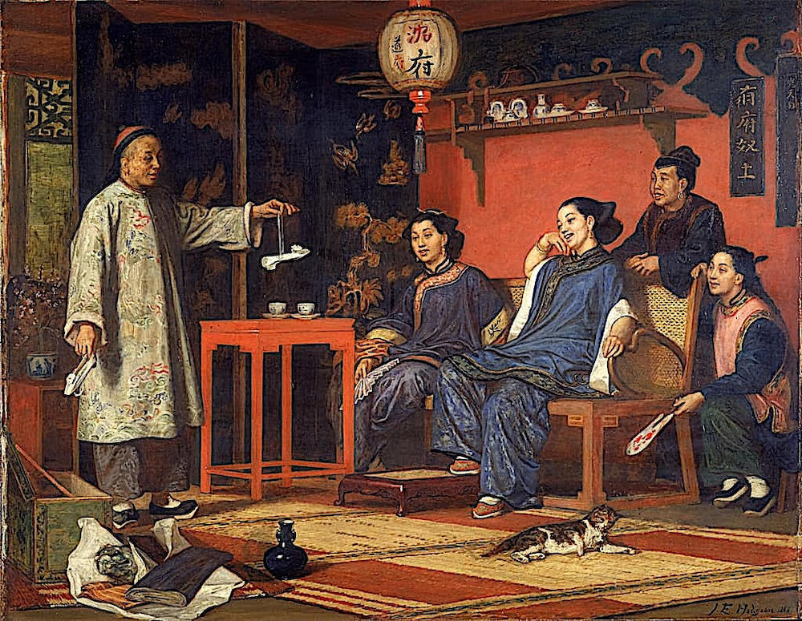
A Victorian oil painting of a room in a Chinese house in 1868 with smooth, soft, brushwork and a realistic detail in the fabric, wood, and porcelain. The back wall is a bright red-orange, and on the left is a black lacquered screen with gold imagery (trees, clouds, birds). The main colors are red and orange against deep blue, with gold and cream as accents. A tall man in a pale robe with colorful embroidered patterns stands on the left. He holds out one arm and dangles a small white shoe from a string, and it is the lightest spot against the dark screen. Two women sit relaxed on a wooden bench with a woven cane back. They wear blue silk robes with embroidered collars and trim. The woman on the right leans back with her hand against her cheek, laughing openly. A third woman stands behind the bench, looking at the man, and a young woman kneels at the right edge of the bench holding a red patterned white fan on her left hand while she rests her right hand on the bench. In the front of the room, an open green with blue and gold detailing wooden box spills white packing paper and a book onto striped woven floor mats. A dark blue vase stands next to it, and a brown and white spotted cat sleeps in the middle of the floor. A white paper lantern with Chinese characters hangs from the ceiling. A shelf on the right wall holds blue-and-white teapots and cups, and a small red wooden table to the left of the benchhas two teacups on it. The mood is playful and curious. Wide, horizontal image.
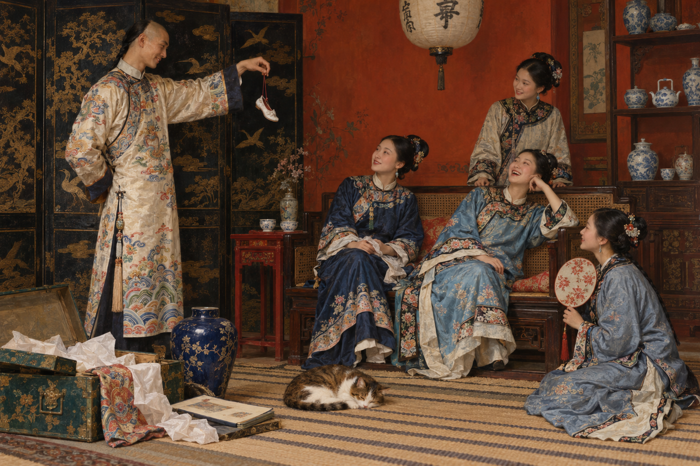
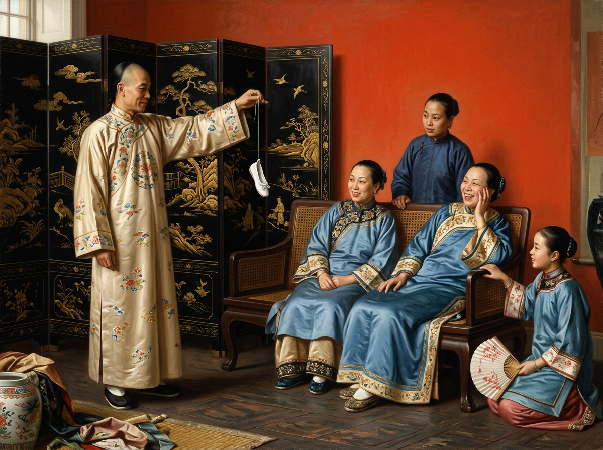
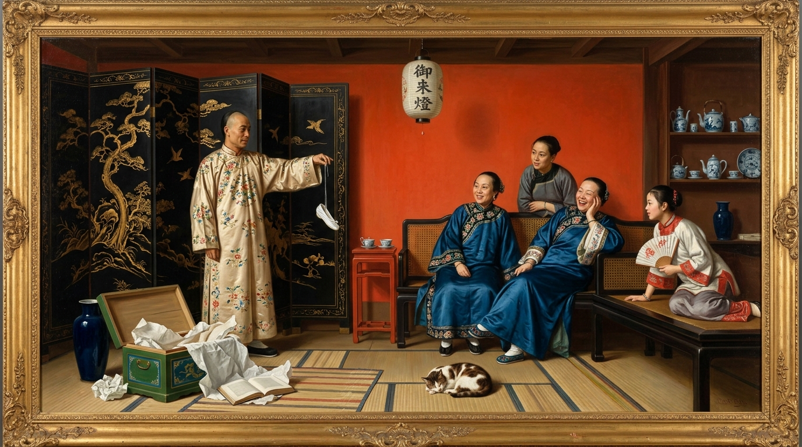
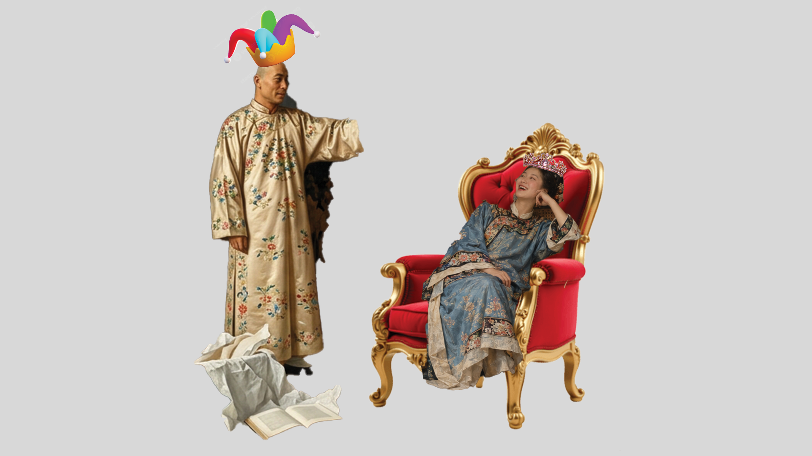
Two figures on a flat background. The figure on the left stands upright with one arm extended to the right, palm open. The figure wears a long, loose, champagne-gold satin robe with wide sleeves and a high, narrow collar. Small multicolored flower clusters in red, pink, blue and green are embroidered across it. A bright cartoon jester hat sits on the figure's head. It has red, green, purple and light blue points with small white balls at the tips, on a gold-orange band. The figure on the right reclines in a gold armchair with a tufted red velvet seat and back. The chair is heavily carved with curled, scrolling legs and arms and a shell-shaped crest. The figure leans back with one elbow on the armrest and a hand against the cheek, head tilted toward the figure on the left, with an open, smiling expression. The figure wears a long blue patterned silk robe with embroidered trim in red, cream and dark tones at the collar, cuffs and hem. A sparkling pink tiara sits on the figure's head.
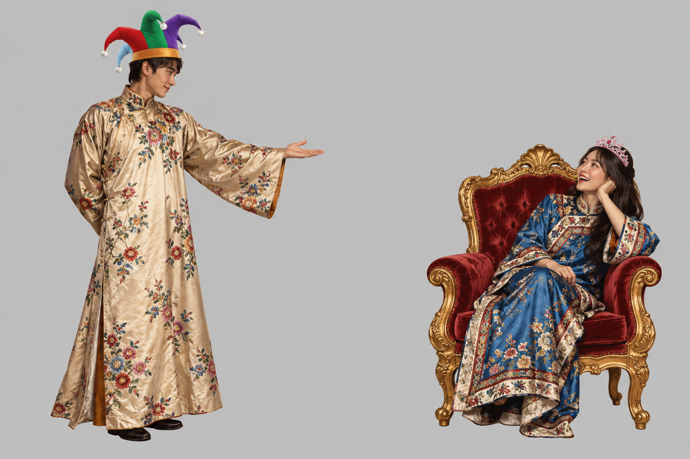
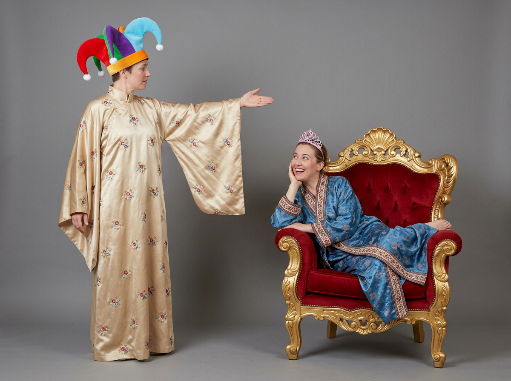
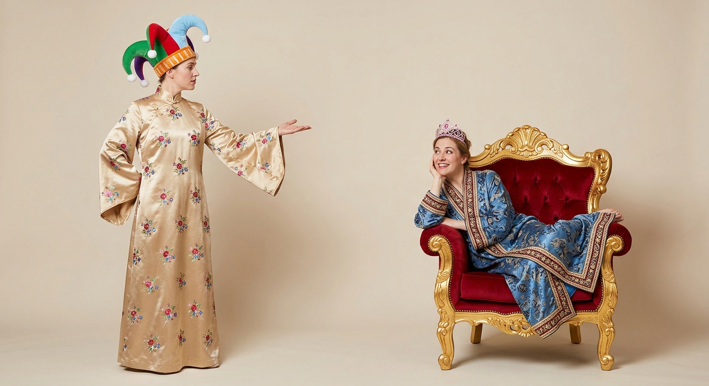
A tropical beach scene with four figures placed in the lower left. The background is a bright, saturated photo of a sandy cove. Tall, leaning palm trees and dense green foliage fill the left side, and a small thatched-roof hut is just visible at the far left edge. Clear turquoise water fades to deeper blue toward the horizon, and large smooth boulders sit on the shore and in the shallows. A rocky point extends into the sea in the distance under a vivid blue sky with a few white clouds. Three of the figures sit close together. Two wear deep blue silk robes with embroidered trim at the collar and cuffs, and one of them leans to the side with a hand against the cheek, smiling. A figure in a gray top stands behind them. All four look off to the right toward the water. A fourth figure sits apart on a large rock at the left, wearing a cream top with red collar trim and gray trousers, and holds an open folding fan with red patterns.
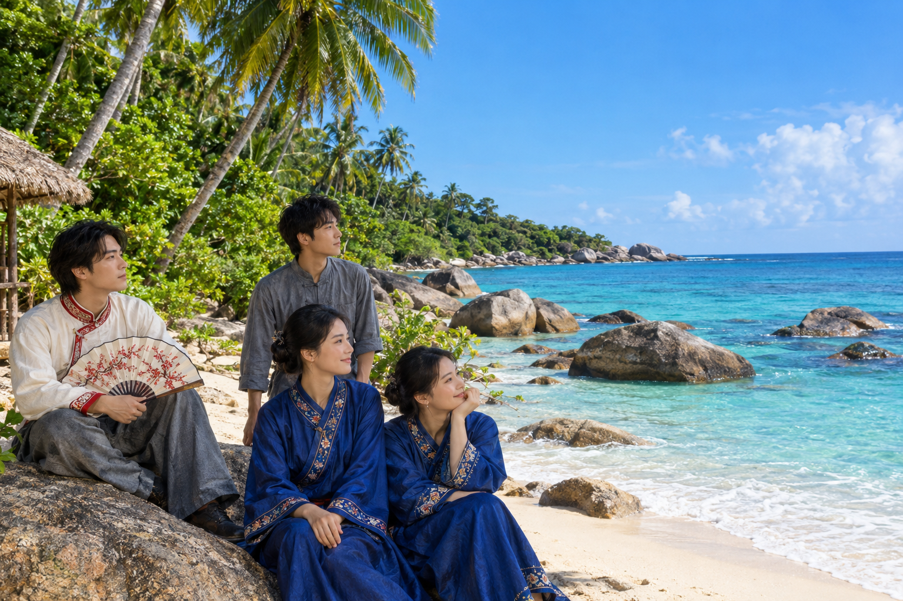
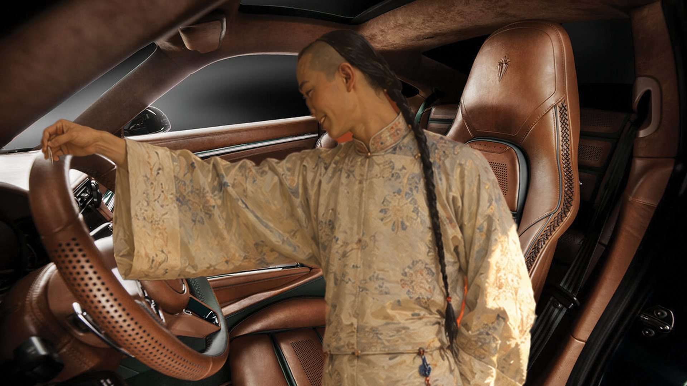
A figure is inside the cabin of a luxury sports car, placed in front of the driver's seat area. The figure reaches one arm out to the left, toward the steering wheel.The head is turned down and to the side, looking toward the wheel with a slight smile. The car interior is rich and leather-y with perforated and stitched details, suede-like trim on the roof, and dark windows.
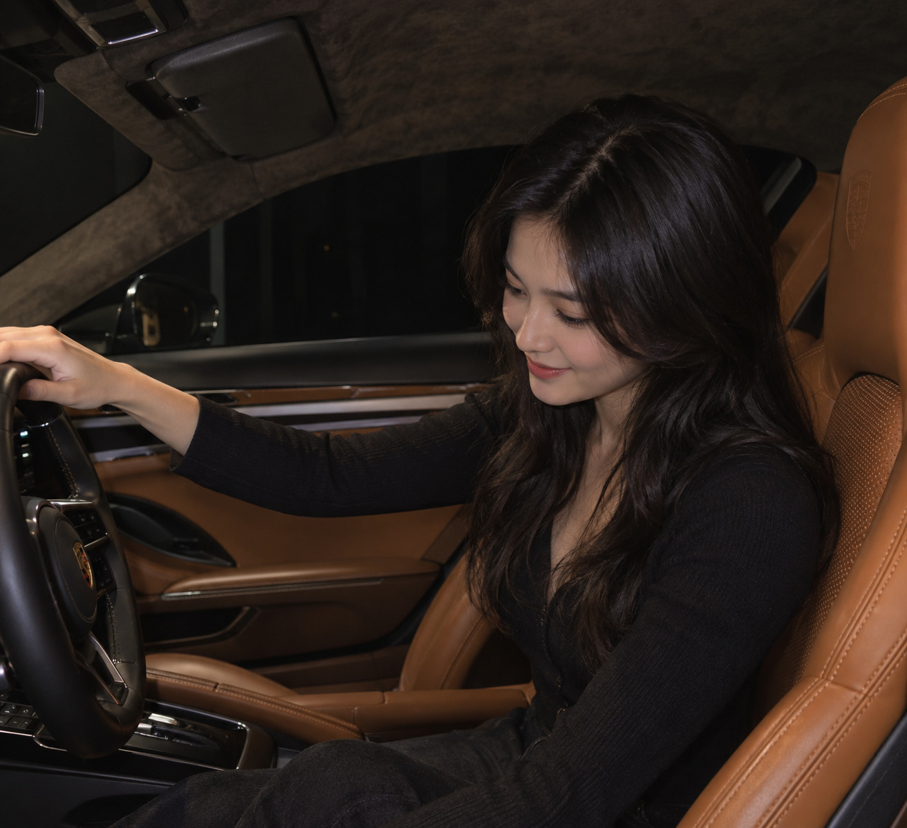
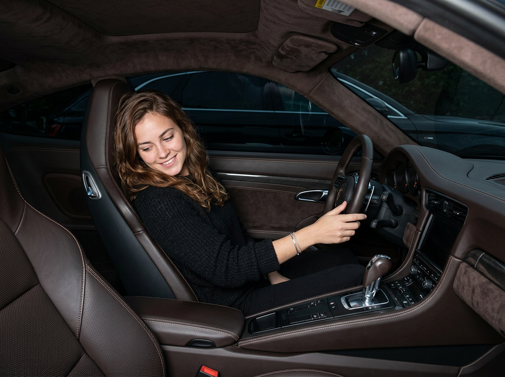
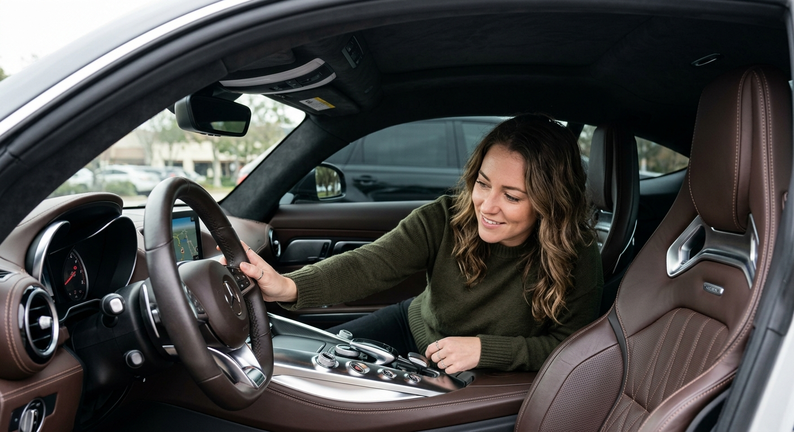
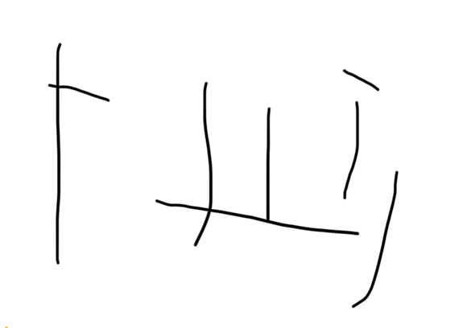
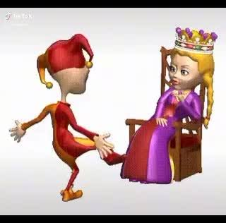